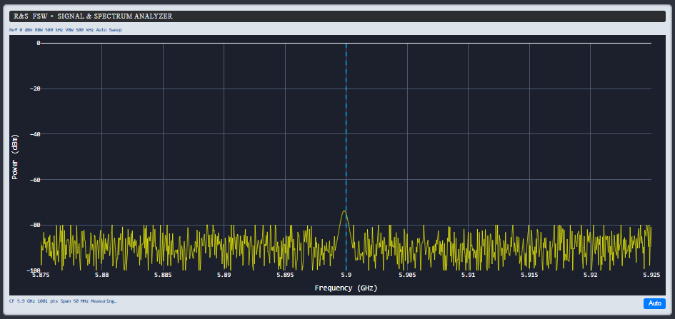
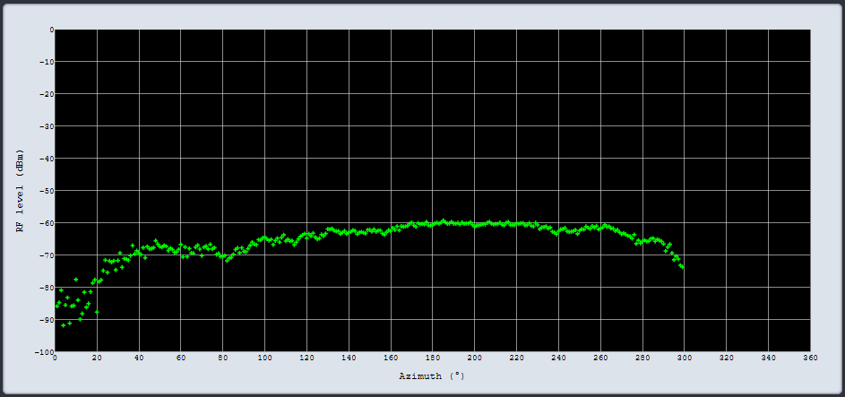
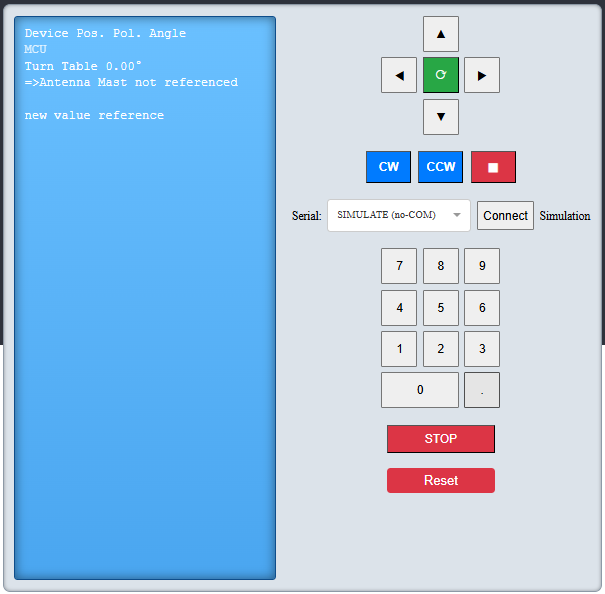

Project Overview
This project presents a flexible RF Test Dashboard developed using Dash and Plotly. It simulates and controls RF hardware for antenna measurements, providing real-time spectrum analysis, signal generation, and polar plotting features. The app supports simulation mode and physical serial port control, making it versatile for lab and test environments.
Key Features
- Interactive signal spectrum and pattern plots.
- Simulation mode for standalone operation.
- Serial port control for real hardware connection.
- CSV data upload for pattern measurements.
- Real-time VSG frequency adjustments and motor control.
Sample Screenshots
Below are example outputs from the RF Test Dashboard app, showcasing its features.
This plot illustrates the real-time signal spectrum captured using the dashboard. The spectrum is analyzed for noise floor and signal peak clarity.
The azimuth pattern showcases antenna measurement data, providing insight into beamwidth and directivity.
The control panel allows interactive management of frequency generation, motor control, and simulation toggling, ensuring precise testing operations.
Technical Stack
This project leverages the following technologies:
- Python with Dash for the web application.
- Plotly for interactive graph visualizations.
- Pandas and Numpy for data handling.
- PySerial for serial communication with hardware.
Install and Run
Install the required Python packages with:
pip install dash pandas numpy pyserial plotly
Then run the app with:
python app.py
Source Code
The source code is organized with a main app.py file and a requirements.txt file for dependencies. Make sure to adjust the CSV_PATH in the code to point to your data files.